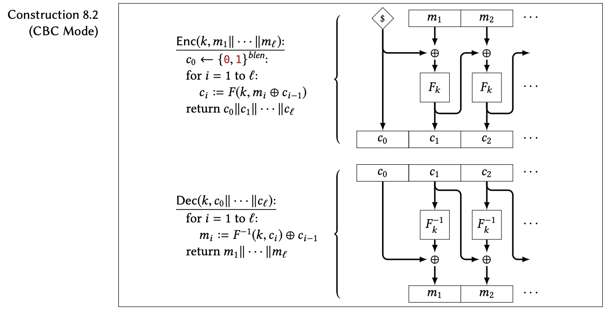

Note: not all ASCII values are printable using text, so if you're encrypting text, your ciphertext on the right (the text version) may look weird. The binary representation on the left is what you should copy and paste if you'd like to decrypt it.
A CBC (cipher block chaining) block cipher is a way of encrypting or decrypting data by splitting up your message into blocks (hence the name). With each block, it uses something called an invertible function. An invertible function is exactly what it sounds like - a function that can be inverted to get back what you started with.
A simple example of an invertible function is one that just reverses the order of your letters. So if your original text is "abcd", after putting it into a function f, you'll get "dcba". We know that it's invertible because if you put it in the inverse function, f -1, and reverse the letters again, you'll get "abcd", which is exactly what you started with. (In this case, f and f -1 are the same function, meaning you follow the same directions to use both, but that isn't always the case.)
Now that we know what an invertible function is, we can conceptualize what CBC block cipher does. We split our message up into blocks of a specific length, and input each block (along with the key) into our invertible function. To make sure that it isn't too easy to guess our original message from the encrypted result, we'll change each block by some predictable amount called the initialization vector (IV) first (a random block of numbers that we choose at the beginning.) This is sort of like adding the new block to our original message's block and then putting it into the function.
Now that all of the blocks have been changed by the function, we can stick them all together along with the IV and return them as our encrypted ciphertext.
Getting our original message back from the ciphertext is as simple as splitting the ciphertext up into blocks and inserting them into the inverse function and then un-changing the result by the IV we used before. (This is like subtracting the IV that we added before). And ta-da, we have our original message!
(Simplified) example:
A helpful diagram from chapter 8 of Mike Rosulek's The Joy of Cryptography is shown below.
The idea of a CBC block cipher is very similar to what was shown in the beginner's explanation. We have our IV, c0, that was chosen from a random assortment of blocks, and we XOR* it with the first block of our message, m1. Then we put it into our invertible function called a pseudo-random permutation (PRP) along with our key to generate the next block of the ciphertext, c1.
We just follow that general pattern. XOR the ith block of the message with the (i-1)th block of the ciphertext, that is, the one that we just generated. Then put it into the PRP, f with our key. At the end we combine all the blocks of the ciphertext together.
To get our original message back, we follow the same general format of using our inverse PRP, f -1 with the key and the ith block of the ciphertext. Then we XOR that with the (i-1)th ciphertext block, that is the block immediately before it, to get the corresponding message block. Combine them all and we get our original message back!
* A detailed explanation of the operation XOR can be found under the advanced explanation on the one-time pad page, here.